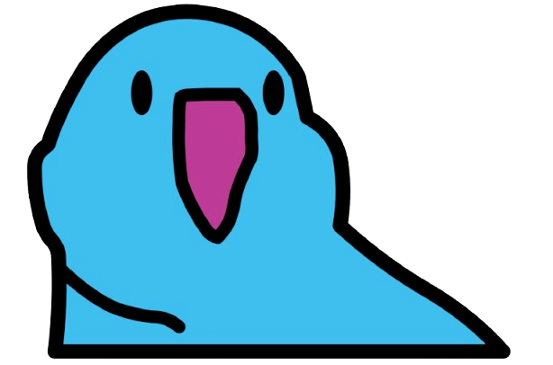
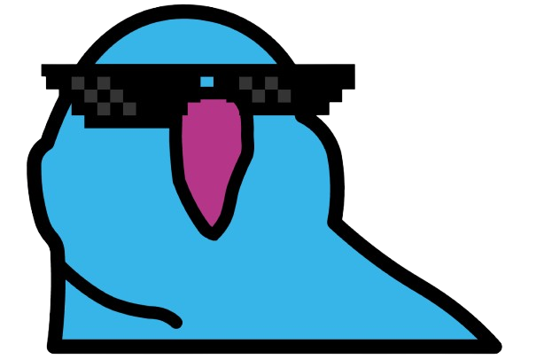

VisionGuard: vibe-coding my own dry-eye relief app
I spend most of my day staring at a screen — reading papers, debugging Python, training models. After a few hours, my eyes feel sandy and my focus drifts. Classic digital eye strain: too much sustained near-focus, not enough blinking, too much blue light before bed.
I tried existing tools. f.lux handles color temperature well but does nothing about blinking. BlinkMore tracks blinks but only with the built-in webcam, which is useless when I'm working with a closed laptop and an external monitor. Nothing tied all three pieces together.
So I vibe-coded one with Claude Code over a weekend. The result is VisionGuard, a small native macOS app that combines the three interventions I actually wanted.
What it does
- Periodic rest reminders. Schedules look-away alerts so the ciliary muscle gets a break from sustained near focus — the 20-20-20 rule, automated.
- Blink detection. Watches blink rate through the camera. When I stop blinking enough (which happens silently when I'm concentrating), the screen edges pulse with a soft gradient as a peripheral nudge — non-intrusive, but hard to ignore.
- Dynamic color temperature. An f.lux-style warm shift through the day to cut blue light in the evening.
The blink-detection piece is what's missing from most existing tools. I extended it to work with Continuity Camera (iPhone as webcam) and any external camera, so it works in a clamshell setup with an external monitor. All the image processing runs locally — nothing leaves the machine.
The parrot in the menubar
Instead of a number or a dry status icon, I wanted the blink-detector to feel friendly, so the menubar shows a small blue parrot whose state mirrors mine. When my eyes are open, the parrot's eyes are open. When I blink, the parrot blinks too — except its "closed-eye" state is a pair of pixel-art sunglasses, because a parrot squinting at a screen all day deserves some shades.


It's a tiny detail, but it matters: the icon turns the detector from a silent background process into something I glance at and immediately understand. If the parrot stops swapping states for a while, I know I've stopped blinking — and that's the cue to relax my eyes before the screen-edge animation has to nudge me.
Why vibe-coding worked here
This was a good fit for vibe-coding because the problem is well-scoped, the building blocks exist (AVFoundation for the camera, Vision framework for face landmarks, CGDisplay APIs for the color shift), and I'm the only user — I can iterate on what feels right rather than write a spec.
What surprised me: most of the time wasn't spent writing code, it was spent noticing. Watching the gradient animation pulse on my real screen and realizing it was too aggressive. Catching that the blink-rate threshold drifted when I wore glasses. Realizing the menubar icon needed a clearer "is the camera on" affordance. None of these were on my mental list at the start. Claude Code shortened the loop from "I notice something" to "it's fixed" enough that I actually iterated on the UX instead of shipping the first thing that compiled.
Stack
- Platform: macOS 14+, Apple Silicon
- Language: Swift
- License: Apache 2.0
- Built on: the BlinkMore project, extended with external-camera support
If your eyes are also unhappy after a long day, the DMG is on the releases page. Source is here — issues and PRs welcome.